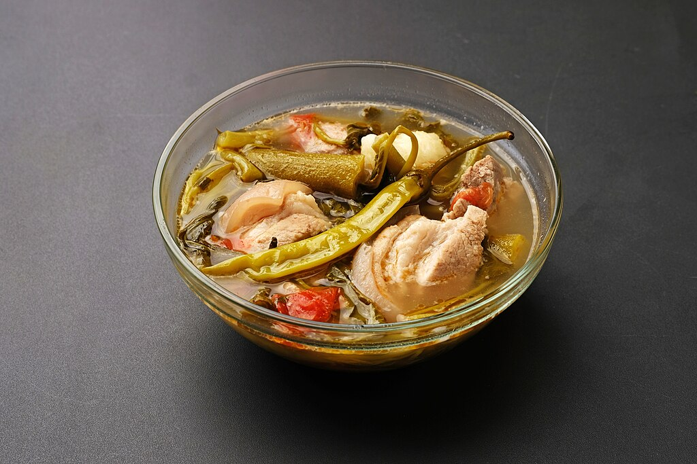

(Pork) Sinigang Recipe

Sinigang is a popular Filipino soup known for its
distinct sour and savory flavor. Made with pork, beef, or seafood, and
simmered with a variety of vegetables like radish, tomatoes, and leafy
greens, Sinigang gets its signature tang from tamarind or other souring
agents like green mango or calamansi. Served piping hot, it's a
comforting dish that pairs wonderfully with rice and is enjoyed for its
refreshing and uniquely Filipino taste.
Serves: 4 people
Prep Time: 20 minutes
Cook Time: 1 hour and 20 minutes
Ingredients:
- 2 cups of pork spare rib cut into chunks
- 1 pc of red onion (quartered)
- 2 pcs of medium sized tomato (quartered)
- 8 pcs of sitaw (sliced into 2 pieces)
- 250 g of kangkong stalk and leaves
- 1 pc talong (sliced)
- 2 pcs siling pangsigang
- 1 (20g) pack of Sinigang Mix (depends on your preference)
- ½ cup labanos (sliced thinly)
- 6 to 8 pieces of okra
- 4 ¼ cups of water
Instructions:
-
Clean and Boil the Pork
Rinse the pork spare ribs thoroughly under running water to remove any
impurities. In a large pot, add the pork and pour in 4 ¼ cups of
water. Bring to a boil over medium heat, then lower the heat and
simmer for 30-40 minutes, skimming off any scum that rises to the
surface for a clear broth.
-
Add Aromatics and Simmer
Add the quartered red onion and tomatoes to the pot. Cover and let
simmer for an additional 10 minutes, allowing the flavors to meld
together.
-
Add Root Vegetables and Seasoning
Add the sliced labanos and okra to the pot. Pour in the Sinigang Mix,
adjusting the amount based on your preferred level of sourness. Stir
well and continue to cook for 10 more minutes until the root
vegetables start to soften.
-
Add Remaining Vegetables
Add the sliced talong and sitaw, then simmer for another 5-7 minutes
until the vegetables are tender.
-
Finish with Greens and Chili
Add the kangkong stalks first, followed by the leaves, and the siling
pangsigang. Stir gently and cook for an additional 2-3 minutes, until
the greens are just wilted but still vibrant.
-
Serve
Ladle the hot, sour sinigang into bowls and serve with steamed rice.
Enjoy this comforting and tangy Filipino favorite!